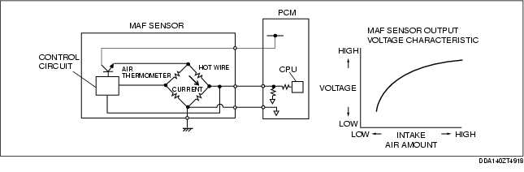

Mass air flow (MAF) sensor construction/operation [ZY]
• Installed on the air cleaner cover.

• Built into the IAT sensor.

• When the temperature of the metal decreases, the resistance decreases. Using this characteristic, the hot wire captures heat from the flow of intake air and converts the intake airflow amount to voltage.
• The cold wire converts intake air density to voltage from the ambient temperature of the cold wire, using the characteristic of air whereby the intake air density decreases due to the increase in intake air temperature.
• The voltages obtained by the hot wire (intake airflow amount) and the cold wire are compared and the electric potential becomes stable by supplying the difference in voltage to the transistor. The voltage supplied to the hot wire is output as the mass intake airflow amount.
